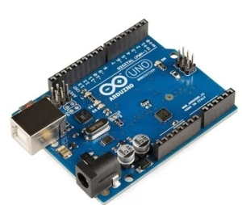

.jpg)
This model is developed usin Arduino Uno.Arduino Uno is an open-source microcontroller board based on the processor ATmega328P. It has 14 digital input/output pins (of which 6 can be used as PWM outputs), 6 analog inputs, a USB connection, a power jack, an ICSP header and a reset button. It contains everything needed to support the microcontroller. Just plug it into a computer with a USB cable or power it with an adapter to get started.
It has three parts in the bottom (a small chamber for storing the dust, the middle portion includes the motor, fan, and the battery socket on the top,there is a cover or cap for the battery). It has a DC motor and a fan. This motor is directly connected to 3V (2*1.5volt AA batteries) via a simple switch. As we are powering our robot with a 7.4V battery, we will cut the connection from the internal battery and power it from the 5V power supply. To detect the obstacles, we are using the popular HC-SR04 ultrasonic distance sensor or we can call it the obstacle avoidance sensors. The working is very simple, first, the transmitter module sends an ultrasonic wave which travels through air, hits an obstacle, and bounces back and the receiver receives that wave. By calculating the time with Arduino, we can determine the distance.To detect the obstacles, we are using the popular HC-SR04 ultrasonic distance sensor or we can call it the obstacle avoidance sensors. The working is very simple, first, the transmitter module sends an ultrasonic wave which travels through air, hits an obstacle, and bounces back and the receiver receives that wave. By calculating the time with Arduino, we can determine the distance. We will make an interface between the IR sensor and Arduino. The working of the IR Proximity Sensor is very simple, it has an IR LED and a photodiode, the IR LED emits IR light and if any obstacle comes in front of this emitted light, it will be reflected, and the reflected light will be detected by the photodiode. But the generated voltage from the reflection will be very low. To increase that, we can use an op-amp comparator, we can amplify and get output. An IR module has three pins - Vcc, ground, and output. Usually, the output goes low when an obstacle comes in front of the sensor. So, we can use this to detect the floor. If for a split second, we detect a high from the sensor, we can stop the robot, turn it back or do anything we want to prevent it from falling from the staircase.

.jpg)
We have three ultrasonic sensors that detect obstacles. So, we need to connect all grounds of ultrasonic sensors and connected them to common ground. Also, we connect all the three Vcc of the sensor and connect that to the common VCC pin. Next, we connect the trigger and echo pins to the PWM pins of the Arduino. We also connect the VCC of the IR module to 5V and ground to the ground pin of Arduino, the output pin of the IR sensor module goes to the digital pin D2 of the Arduino. For the motor driver, we connect the two enable pins to 5v and also the driver voltage pin to 5V because we are using 5volt motors.The Arduino, Ultrasonic modules, motor driver, and motors work on 5 Volt, the higher voltage will kill it and we are using the 7.4-volt battery, to convert that into 5 Volt, the LM7805 voltage regulator is used. Connect the vacuum cleaner directly to the main circuit.